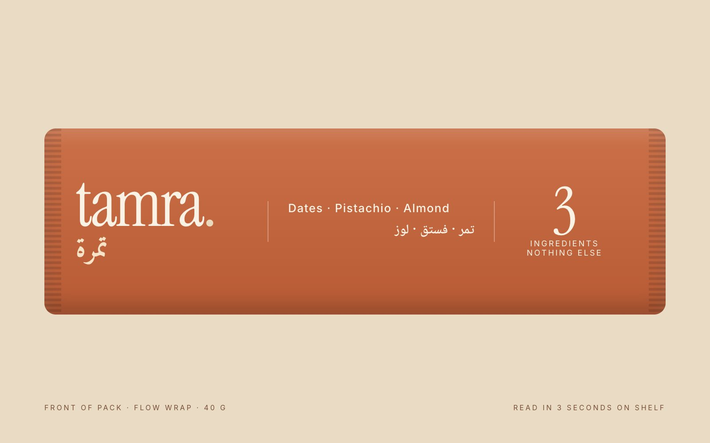
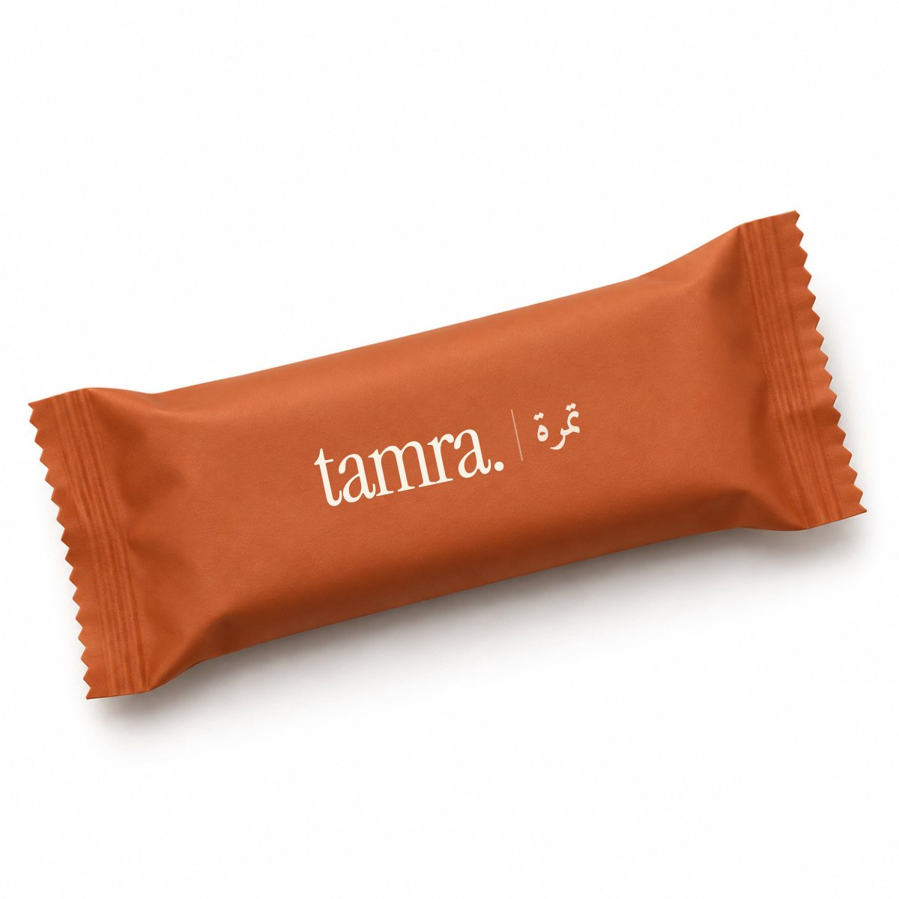
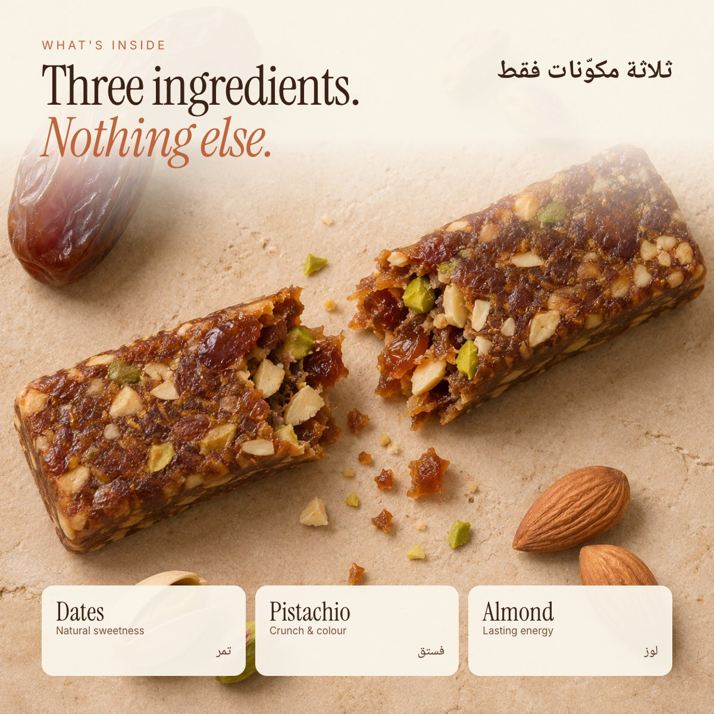
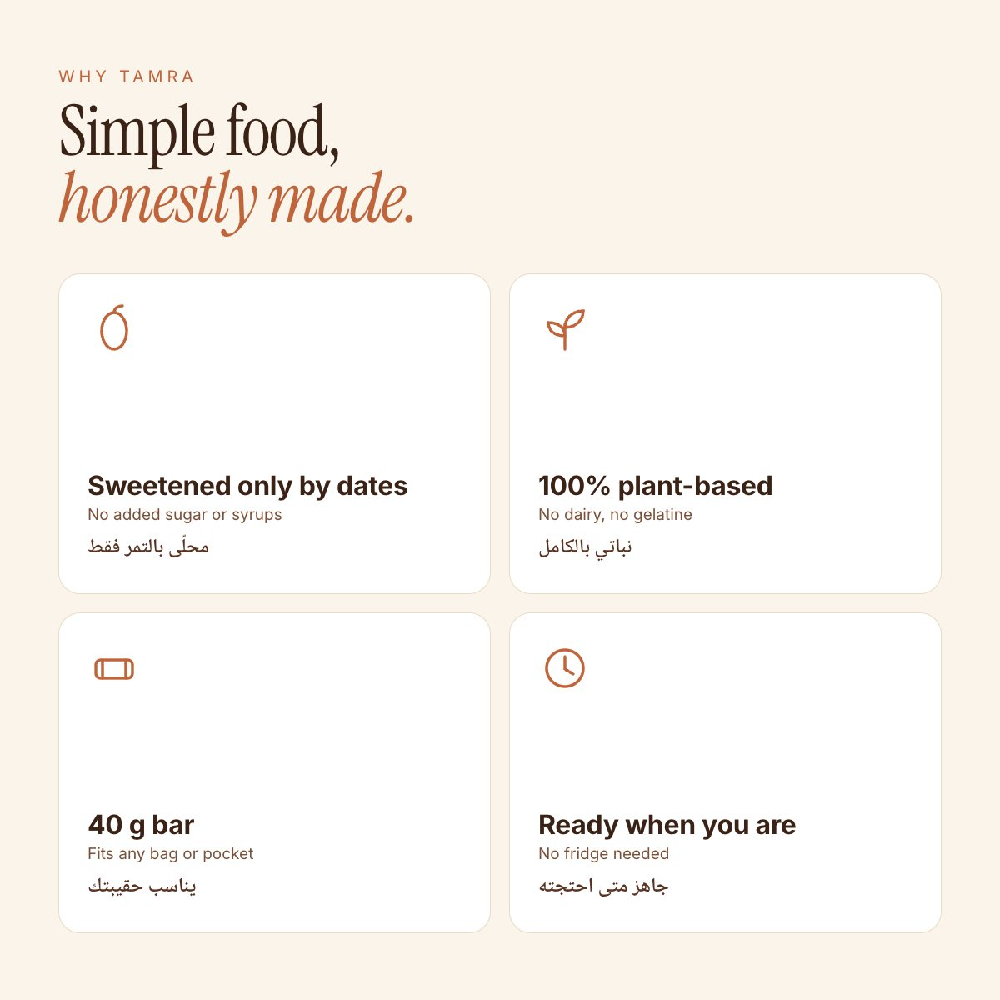
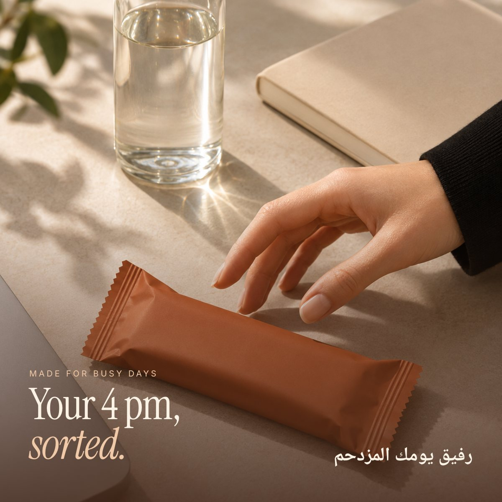

Aisha Ahmed
Aisha Ahmed( Exhibit II · Packaging & e-commerce listing )
Tamra
Shelf to screen.
تمرة

The brief
A date-and-nut snack bar that has to win twice: in three seconds on a crowded shelf, and in a scroll of thumbnails online. The project applies what I see every week in retail to the online shelf.
The approach
- 01
Built for the 3-second glance
In stores, shoppers decide fast. The front of pack carries only three things: the name, what is inside, and one proof point ("3 ingredients"). Everything else moves to the back or the listing.
- 02
Listing images that answer questions
Each image answers one question a shopper has before buying: What is it? What is inside? Why this one? When would I eat it? No image tries to do everything.
- 03
Bilingual by design
Arabic sits next to English as an equal on every image and on the product page, with a one-tap language switch instead of a separate site.





How I would measure it
If launched, I would A/B test the main image and the first bullet, and track add-to-bag rate, bundle share (box of 12 vs single) and repeat purchase.
Self-initiated concept. The brand and product are fictional and were created to show my process. Photography generated with AI and art-directed by me; all layout, typography and copy are my own.
Next exhibitFocus Week →